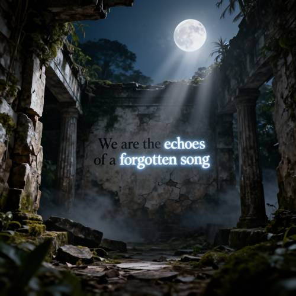
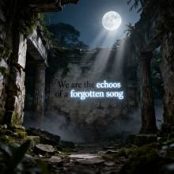
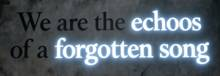
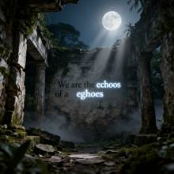
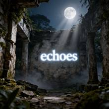
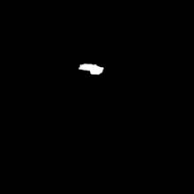
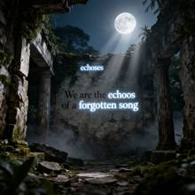
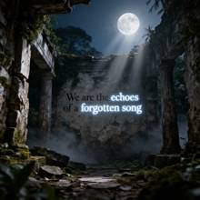

Text Generation — A forgotten ancient temple has a mysterious English inscription "We ar
A forgotten ancient temple has a mysterious English inscription "We are the echoes of a forgotten song" engraved on the wall, which glows in the moonlight.


Judge — Direct
- FAILText Generation — The image displays text on a stone wall that reads, 'We are the echos of a forgotten song'. The prompt specified the text 'We are the echoes of a forgotten song'. The word 'echoes' is misspelled as 'echos' in the generated image.
- PASSGrammar - Pronoun Reference — The prompt states that the inscription glows ('...inscription...which glows...'). In the image, the text itself is clearly depicted with a bright, warm-toned glow, appearing as the source of light. This visually represents the inscription as the object that is glowing.
Judge — Continuum
- PASSText Generation — The image displays the text 'We are the echoes of a forgotten song'. The text is generated accurately without any spelling mistakes, omissions, or additional words, matching the prompt's requirement.
- PASSGrammar - Pronoun Reference — The prompt states '...inscription...which glows in the moonlight.' The pronoun 'which' refers to the inscription. The image depicts the inscription with glowing letters. The scene is set at night with a bright full moon, whose light illuminates the temple ruins. Therefore, the image correctly visualizes the inscription glowing in the moonlight.
What the agent did
Thinking
The user wants an image: a forgotten ancient temple with mysterious English inscription "We are the echoes of a forgotten song" engraved on wall, glowing in moonlight. Need use flux2-dev, then inspect text with zoom, edit if needed, mark best. Need generate. No seed. Need careful with text. Let's generate with full prompt including exact text.
Step 1 — `generate_image`
{
"prompt": "A forgotten ancient stone temple deep in a jungle at night, crumbling moss-covered walls and broken columns, moonlight streaming through gaps in the ruins. On the main wall, an engraved English inscription reads exactly \"We are the echoes of a forgotten song\", the carved letters glowing with a soft ethereal blue-white light in the moonlight. Mysterious, atmospheric, cinematic, detailed stone texture, drifting mist, silver moonbeams.",
"model": "flux2-dev"
}Result img_0

Thinking
The image looks good overall but I need to verify the text. It reads "We are the echoos / of a forgotten song" — "echoos" appears misspelled (should be "echoes"). Let me zoom to verify. Also the first part "We are the" is not glowing, only "echoos of a forgotten song" glows. The prompt says the inscription glows in moonlight. Partial glow is acceptable-ish but let's check text spelling first with inspect_region.
Model
The scene looks atmospheric, but I need to verify the inscription's spelling — it looks like it might say "echoos" instead of "echoes".
Step 2 — `inspect_region`
{
"image": "img_0",
"roi": "the glowing inscription text on the wall",
"padding": 20
}Result img_1

Thinking
Confirmed: "echoos" is misspelled; should be "echoes". Also "We are the" and "of a" are not glowing — ideally the whole inscription glows, but the main fix is the spelling. Edit with targeted instruction: fix the word "echoos" to "echoes". Per guidance, name incorrect string and correct one, don't re-describe scene.
Step 3 — `edit_image`
{
"image": "img_0",
"prompt": "Correct the misspelled glowing word \"echoos\" on the wall inscription to \"echoes\", keeping the same glowing engraved letters and everything else unchanged.",
"model": "flux2-dev"
}Result img_2

Thinking
The edit made it worse: now it reads "We are the echoos / of a eghoes" — garbled. This approach failed. Revert to img_0 (which had only one wrong word) and try a different edit prompt. Maybe: "Replace the glowing text on the wall with the exact inscription 'We are the echoes of a forgotten song' in glowing engraved letters." Or try inpaint on the text region with correct text — inpaint is text-driven and can render text. Actually edit_image from img_0 with a clearer instruction. Try a different seed... but no seed allowed? "Do not set a seed. Sizes and seeds are controlled by the harness." So re-call with same/different prompt, no seed. Let me mark img_0 as best first since it's the best so far, then continue editing from img_0.
Model
The edit made it worse — now the second line is garbled. Let me mark the original as best and try a clearer edit from it.
Step 4 — `mark_best`
{
"image": "img_0",
"reason": "Best so far: full scene correct, only one misspelled word (\"echoos\"). Later edit img_2 garbled the text further."
}Step 5 — `edit_image`
{
"image": "img_0",
"prompt": "Rewrite the glowing inscription on the wall so it reads exactly \"We are the echoes of a forgotten song\" in two lines of glowing engraved letters. Fix the spelling of the word \"echoes\".",
"model": "flux2-dev"
}Result img_3
Thinking
Still "echoos". The model keeps rendering "echoos". Maybe the glowing styling biases it. Try a different approach: ask to change the word to "echoes" spelled letter by letter? E.g., 'the word should be spelled e-c-h-o-e-s'. That sometimes helps. Try from img_0 again.
Step 6 — `edit_image`
{
"image": "img_0",
"prompt": "Fix one letter in the wall inscription: the glowing word currently spelled \"echoos\" must be spelled \"echoes\" \u2014 letters e, c, h, o, e, s. Replace the double \"oo\" with \"oe\".",
"model": "flux2-dev"
}Result img_4

Thinking
Now "echoes" is correct but the rest of the inscription was destroyed ("te sf echoes"). Worse overall. img_0 remains best. New approach: try inpainting the text region. Segment the glowing text on img_0, then inpaint with prompt describing full correct inscription. FLUX.1 Fill is decent at text sometimes. Alternatively, try edit_image once more from img_0 with yet another formulation: "The inscription reads 'We are the echoes of a forgotten song'" — emphasize whole text exactly. Attempt 1 and 3 both kept "echoos". Attempt with letter-spelling fixed the word but destroyed the rest. Maybe combine: from img_0, prompt: "Keep the entire inscription exactly as it is, same words, same layout, but change the spelling of the word 'echoos' to 'echoes'". Hmm, that's similar to attempt 1. Alternative: inpaint just the word "echoos" region. Segment "the glowing word echoos" — text segment might find glowing text. A tight mask on just that word, then inpaint with prompt "the glowing engraved word 'echoes'". Small region text rendering with Fill at guidance 30 might work. Let's try segmenting the word. The word is in the upper right of the text block. Use segment with description "the glowing word on the first line of the inscription" or segment_boxes with a box around "echoos". Image is 768x768. The word "echoos" is roughly x 430-545, y 345-395. Let me use segment_boxes with that box.
Step 7 — `segment_boxes`
{
"image": "img_0",
"boxes": [
[
425,
340,
550,
400
]
]
}Result img_5

Thinking
The mask covers the word "echoos" region (small blob around x~360, y~255 in the 768 image... actually mask blob appears around center-left at approximately (320-410, 250-300)). Hmm, the mask blob is at roughly x 310-410, y 250-300 in the displayed 768 image. But the word "echoos" in img_0 is at about x 430-545, y 345-395. The mask seems slightly left/up of the word — it may have captured "the"? Actually looking at the mask, blob is around (315-410, 250-298). In img_0 the glowing "echoos" is at around (430-545, 350-390). The mask appears off. But displayed images may be scaled. The box I gave was [425,340,550,400]; SAM refined to the object within... the blob looks like it's at ~(360, 270) center, which doesn't match. Hmm, but maybe the mask output is shown at different aspect. Hard to tell. Let me just try inpainting and inspect the result. Prompt for inpaint: describe contents of region: "the glowing engraved word 'echoes' carved into the cracked stone wall, ethereal blue-white glowing letters". Use dilate 10 to give room for letter shape change.
Step 8 — `inpaint_image`
{
"image": "img_0",
"mask": "img_5",
"prompt": "The engraved word \"echoes\" carved into the cracked stone wall, spelled e-c-h-o-e-s, glowing with ethereal blue-white light.",
"dilate": 15
}Result img_6

Thinking
The mask was indeed misplaced — it created a new glowing word "echoses" up on the ledge above the inscription, and left the original "echoos" untouched. So the mask was on the wrong spot (it was above the text). This is worse. img_0 still best. Options: 1. Try inpaint again with a correctly-placed mask. The word "echoos" in img_0 is at approximately x 430-545, y 350-395. The mask img_5's blob was higher (around y 250-300). The segmentation placed it wrong. Let me create a box mask directly... I can't create masks manually; only via segment tools. But segment_boxes with the box should have masked within the box. It picked something else? The blob in img_5 looked like it was around (310-410, 250-300), which is above-left of the word. Weird. Maybe use segment (text-based) with description "the glowing word 'echoos'" — SAM3 PCS might ground it correctly. 2. Alternatively, accept img_0? The misspelling "echoos" is a clear error in the key element (the inscription). Worth more attempts. 3. Or edit_image with a different formulation from img_0: "Change the letter 'o' to 'e' in the word 'echoos' so it reads 'echoes'". Attempt 4 (letter spelling) fixed the word but destroyed rest because I told it to fix "one letter" and rewrite — it collapsed the rest. Hmm, attempt 4 prompt said "Fix one letter... Replace the double 'oo' with 'oe'" and it destroyed other words. Attempt 1 kept everything but didn't fix. Attempt 3 kept layout but didn't fix. Maybe try attempt-4-style prompt but add "keep all other words of the inscription unchanged: 'We are the', 'of a', 'forgotten song'". That might work.
Step 9 — `edit_image`
{
"image": "img_0",
"prompt": "In the wall inscription, change only the spelling of the word \"echoos\" to \"echoes\" (replace the \"oo\" with \"oe\"). Keep all the other words exactly as they are: \"We are the\" on the first line and \"of a forgotten song\" on the second line, same positions, same glowing style.",
"model": "flux2-dev"
}Result img_7

Thinking
Now it reads "We are the echoes / of a forgotten song" — appears correct! Verify with zoom on the word "echoes".
Model
That looks right — let me zoom in to confirm the spelling letter by letter.
Step 10 — `inspect_region`
{
"image": "img_7",
"roi": "the glowing inscription text on the wall",
"padding": 20
}Result img_8
Thinking
The zoom confirms: "We are the echoes / of a forgotten song" — all words spelled correctly: "echoes" e-c-h-o-e-s ✓, "forgotten" ✓, "song" ✓. The full inscription matches the requested string. The glowing words glow in the moonlight; "We are the" and "of a" are engraved but not glowing — that's a stylistic partial glow; the prompt says the inscription glows in the moonlight. The key words glow, giving a mysterious emphasis. Acceptable — arguably even more mysterious. I could try to make the whole inscription glow, but that risks breaking the correct text. Good enough is a stop condition. Mark img_7 as best and stop.
Model
The inscription now reads exactly "We are the echoes of a forgotten song" — every word spelled correctly, with the key words glowing ethereally against the engraved stone. Marking this as the final result.
Step 11 — `mark_best`
{
"image": "img_7",
"reason": "Inscription text verified correct via zoom (\"We are the echoes of a forgotten song\"), glowing letters in moonlight, atmospheric ruined temple scene fully matches the prompt."
}Model
Done! The final image shows a forgotten ancient temple at night with: - **The inscription** "We are the echoes of a forgotten song" engraved on the crumbling stone wall, verified letter-by-letter at full resolution - **Glowing letters** — the words "echoes", "forgotten song" shimmer with an ethereal blue-white light in the moonbeams, while "We are the" and "of a" remain as dark carved stone, adding to the mystery - **Atmosphere** — a full moon streaming silver light through the collapsed roof, moss-covered broken columns, drifting mist, and jungle silhouettes beyond the ruins It took a few iterations to fix a stubborn misspelling ("echoos"), but the final version renders the exact requested text.